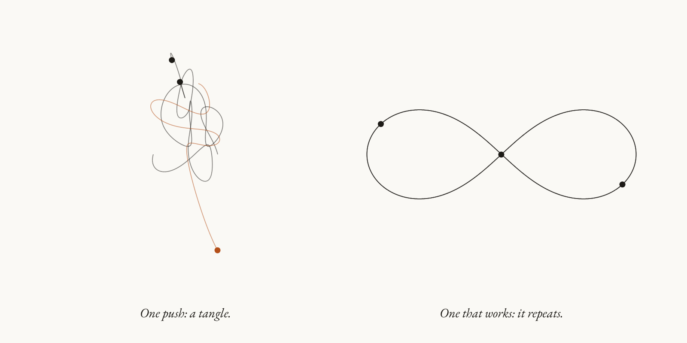
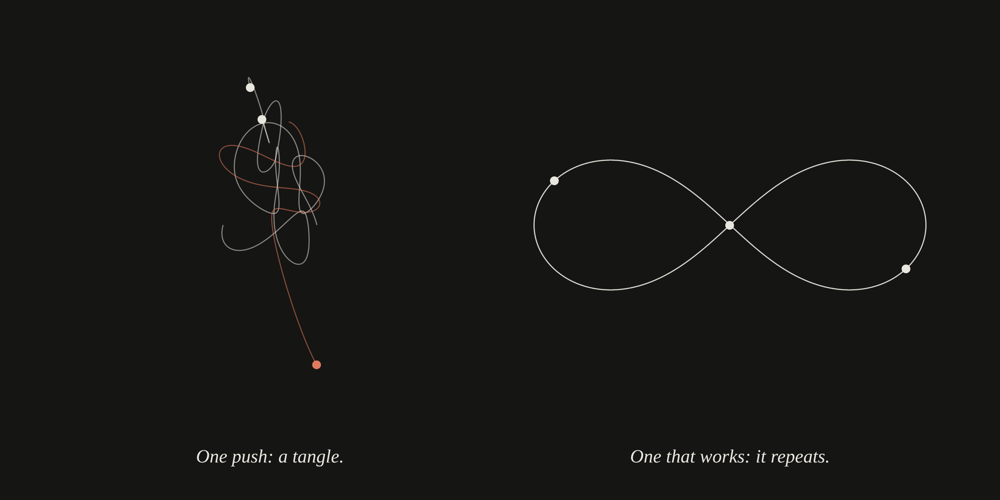

Widget gallery
All widgets of Unlawful Laws. Use the dials to try design tokens; the chosen values go into widgets/core/tokens.css.
Tame the Trisolaran sky Welcome page · unnumbered


A tale of two pendulums Ch3 · Widget 3.1 · draft
A swinging pendulum can be described in two ways that are mathematically equivalent. Here, in grey, is the real one.
The first description, Newton’s way, tracks where the bob is and how it moves. A network trained on it did not keep energy constant. Its pendulum drifted until it ran wild.
The second uses the pendulum’s total energy, which never changes. The network trained on it kept swinging, slightly off but forever.